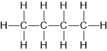
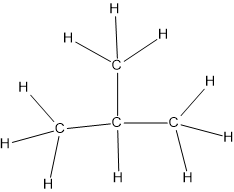
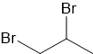

Witaj w temacie wzory
Elo! Ten temet to taki temat który jest niezbędny do kontynuowania nauki chemii.
Czym jest wzór?
To jest zapis który nie wymaga znania nazwy związku tylko jego strukture.
Jakie wyróżniamy wzory?
- Sumaryczny
- Empiryczny
- Grupowy
- Strukturalny
- Półstrukturalny
- Szkieletowy
Sumaryczny
Sumaryczny jak sama nazwa wskazuje jest to suma, suma atomów. Np. Kwas siarkowy(VI) składa sie z 2 wodorów(H), 4 tlenów(O) i jednej siarki(S). Więc zapis będzie wygłądał tak: H2SO4 Liczby na dole(w indeksie stechiometrycznym) oznaczają ile jest konkretnego atomu który jest zapisany po lewej.
We Wzorach kiedy jakaś grupa np. OH powtarza sie jak w wodorotlenku magnezu(1 magnez 2 grupy OH(Wodorotlenek)) zapisuje sie Mg(OH)2 Jak widac OH jest w nawiasie z indeksem przed. Oznacza to ze caly nawias jest 2 razy.
Pierwiastki zapisuje się według rosnącej elektroujemności jak np. H2O. Wodór ma elektroujemnośc 2.2 a tlen 3.44, a już tutaj OF2 gdzie fluor ma elektroujemnośc 4 co jest wieksze od 3.44
Empiryczny
Nazwa 'empiryczny' moze duzo nie mówi ale ten wzór pokazuje najprostrzy stosunek atomów np. eten(C2H4) zapisany by był CH2. Aby uzyskać taki wzór wystardzy podzielic wszystkie indeksy przez wspólny dzielmnik tak jak tutaj przez 2. Po co ten wzór? Dalej nie wiem...
Grupowy
Wzór grupowy polega na podzieleniu na grupy wzór. Zamiast C4H10 zapisać: CH3CH2CH2CH3 widac że to 4 grupy metylowe pod rząd. Jest to o wiele dokładniejszy wzór. Czemu? W chemii organicznej wzory sumaryczne są prawie żę bezuzyteczne przez zjawiskoizomerii polegające na tym że jeden związek może mieć inną strukture jak np. C4H10 może być: CH3CH2CH2CH3 jak i CH3CH(CH3)CH3 (nawias oznacza ze nie jest w jednym łańcuchu tylko odstaje. Widać będzie w następnym przykładzie.)
Strukturalny
Najdokładniejszy wzór. Pokazuje on pełną strukture związku. przykładem będzie też butan C4H10 jego struktura wyglada tak:  lub  widać w tym wzorze to że jedna grupa odchodzi w bok.
Półstrukturalny
Jest to grupowy i strukturalny połączony:  chodzi o to że struktura jest pokazana ale jest skrócona do grup.
chodzi o to że struktura jest pokazana ale jest skrócona do grup.
Szkieletowy
Szkieletowy to wgl jest super:  w miejsciu złamań lini jest grupa metylowa CHx x=4-n n-liczba wiązan tej grupy metylowej